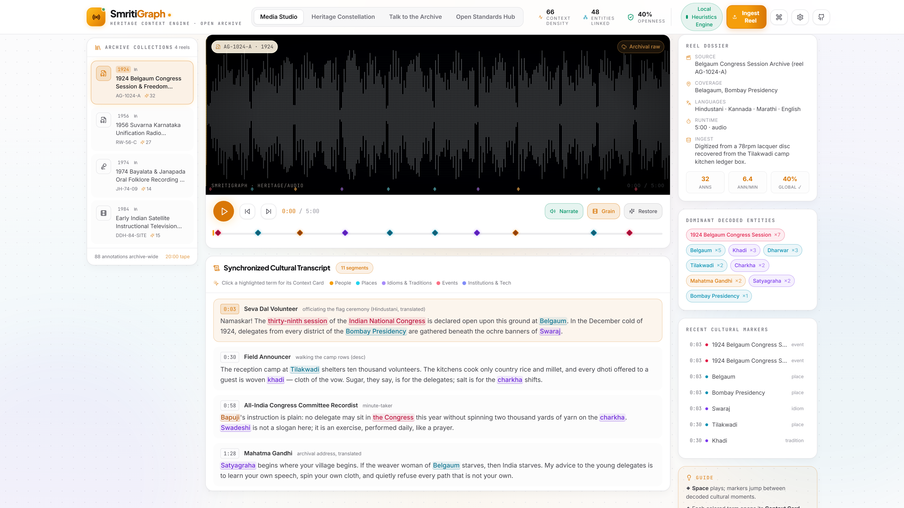
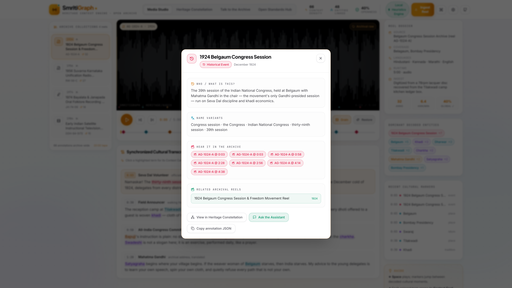
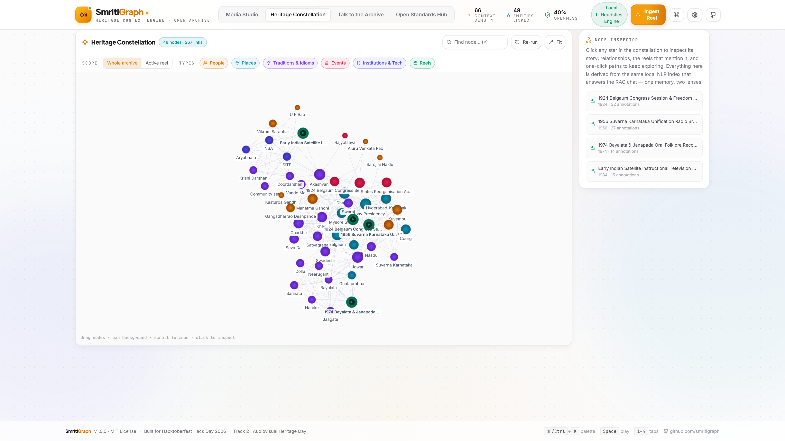
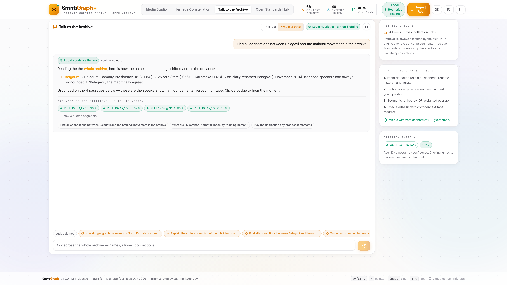
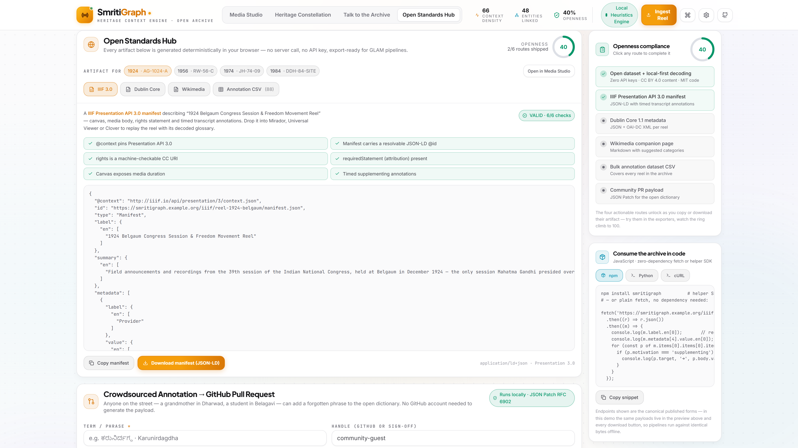

1924 · Belgaum Congress Session
Every term on this tape
carries
a century.
Click one — the archive explains itself in place.
The file exists. The context does not.
“source: AIR Dharwad” —
and
nothing else.
a heritage file with no frame of reference leaves a researcher stuck.
Smriti
Graph
The Living Archive
decode · connect · liberate

01 · DECODE
Every cultural term → a Context Card
· literal meaning, era, region, 100 years of evolution

02 · CONNECT
One reel → a living knowledge graph
· 48 nodes · 267 links · canvas physics, no libraries

03 · ASK
Grounded answers with receipts
· reel + timestamp + confidence, click to verify

04 · LIBERATE
IIIF 3.0 · Dublin Core · CSV · one-click PR
· the formats GLAM pipelines ingest same-day
IIIF Presentation 3.0 manifest
The museum
outlives us.
A valid manifest with timed annotation bodies — the reel re-opens in Mirador, Universal Viewer, or any IIIF player that will exist in 2050.
application/ld+json · Presentation 3.0 · 6/6 validation checks
Heritage ends where
context begins.
Not just the file — the understanding of the file,
in open standards anyone can use, forever.
github.com/smritigraph/smritigraph
→
MIT · zero API keys · works 100% offline · Hacktoberfest Hack Day 2026 · Track 2